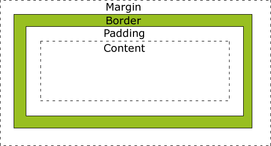
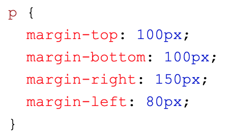
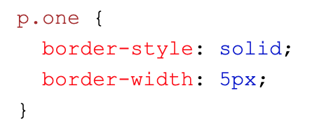
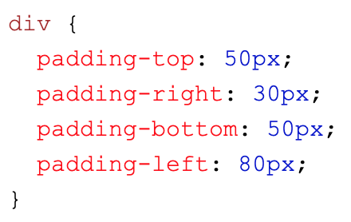

Sprint 4 Cultural Blog
Neuroplasticity and Growth Mindset
How does understanding neuroplasticity benefit people?
It makes you understand that your “intelligence” and “personality” is not fixed. That you can change if you work at something, that the power of thought is powerful.
How might I engage with neuroplasticity to benefit myself?
Realise that I can change my habits. That I’m not “dumb” when I find a challenge hard or near impossible. That if I put a little effort into myself that I can change myself for the better, that I’m not stuck in a fixed cycle.
What are some ways to improve your neuroplasticity?
Stop seeking approval. Acknowledge imperfections. Realise that you are not “failing”, you are learning. Emphasis growth over how fast you do something. Place effort before talent.
A link to a resource I found useful and engaging.
Here.
What is the growth mindset and why is it relevant?
The growth mindset is the belief that your intelligence can change, that the brain is not in a “fixed” state from birth. It’s a mindset in which you embrace challenges and realise that failure is only you learning. It is relevant to my time at Dev Academy as it is important for me to realise that challenges are a good thing, and that habits can be changed for the better.
In this exploration, did anything surprise me? Change for me?
I think I surprised myself by realising that I thought I could not change. That my habits were ingrained even though I technically “knew” I could change them. I had been thinking there was not a lot of point trying to change them because I couldn’t change, that I would always fall back onto old habits. It’s nice to have the reminder that I can change, and that it’s about a mindset.
How will I integrate a growth mindset into your learning journey?
Realise that if I put effort into something and “fail” at it, it is not truly a failure. That putting effort into something isn’t bad, that working at something is enjoyable and that I’m working on my brain! That practise is a good thing, and that working on myself works.
A link to a resource I found useful or engaging.
Here.
Sprint 3 Technical Blog
Javascript and the DOM
An analogy to describe the differences between HTML and CSS:
HTML is like an empty house you’ve just bought. Functional, but not particularly pretty or nice to live in. CSS is the decoration;
the wallpaper, carpet, furnishings!
You can have a house without any of that nice stuff, but it’s not particularly pleasant to look at.
Explain control flow and loops using an example process from everyday life.
Control flow:
If a condition is met, do one thing, or if another condition is met, do another. The simplest process I
can think of is traffic lights: if the light is red, stop; if orange, slow down; if green you can go.
If the lights are none of them: chaos.
Loops:
Do something until a condition is met. An everyday process that I can think of is flipping pancakes!
I’m lazy so I never really check if the pancake is done underneath, I just flip and see. If not golden,
I wait for the other side to cook a bit, and then flip again. Then I check if that side is golden enough!
If not; keep flipping until peak golden crispy fluffy happiness is achieved.
What is the DOM?
HTML and CSS are both quite limited in how much interactivity they can provide. Javascript can provide this interactivity,
but there has to be a way for Javascript to talk to the HTML and CSS you have written for your webpage.
The DOM, or the Document Object Model, is a hierarchical structure for your browser, made up of nodes.
The nodes can be lots of things; elements, attributes, etc. Every HTML element you want to access has a unique type!
The root of the hierarchy is your window object, and then the document object. This is where you can access all the
HTML elements and change the DOM via Javascript. You can set CSS styles, add and remove elements, etc. Basically,
without the DOM, you would not be able to link Javascript with your HTML and CSS, or, in other words, your
Javascript would not be able to access your HTML and CSS and you can’t do anything fancy!
One way you can interact with it is by listening for a click event on the page, and changing the colour of an element when there’s a click!
The difference between accessing data from arrays and objects:
Arrays are a collection of things in a certain order. You can access the things in the array by it’s “index”, or “position”.
Objects are also a collection of things in a certain order, but this time the things have a paired ‘key’ which you can access them by.
You can also access the thing by their key’s “index” or “position”.
What are functions? Why are they useful?
Functions are a block of code that do a specific thing. So instead of having to write that code over and over again
if you want to apply that code in different situations, you only have to “call” or “invoke” the function by it’s function name.
Doing that runs the code within the function block for that specific situation that you need, without you having to write the block of
code over again and again!
Sprint 3 Cultural Blog
Reserach EQ and IQ.
What is emotional intelligence?
I like to think that IQ, or “intelligence quotient”, is “booksmarts”. EQ, or “emotional quotient”, or simply emotional intelligence,
is “peoplesmarts”, relating both to other people and yourself.
Having emotional intelligence means that you can recognise emotions in yourself and the people around you,
label them appropriately, and respond to them intelligently to guide and manage reactions.
It’s about having knowledge of the human emotional experience, and being able to apply it to further
your own and other’s mental well being and gain.
It does not have to be innate; like any other skill, it can be learned.
How is it different than IQ?
IQ has nothing to do with recognising emotions and responding to them appropriately.
You can get tested for it by a standardised intelligence test, which tests your reasoning ability.
It’s about using logic and previously gained knowledge to solve problems or predict outcomes,
how fast you can do so, and also how good your recall is.
Why is it important?
Emotional intelligence is important because everyday you are interacting with at least yourself, and others.
It’s very healthy to be able to recognise your own emotions, realise what’s causing them, and be able to react
appropriately to them in a mindful way. It’s about understanding yourself, and being able to guide and manage
yourself towards your goals. Without it life can be very stressful when you don’t understand why you’re feeling a
certain way, and if you don’t understand why you’re feeling a certain way you can’t know what you can do about it,
so you can never find the source of the problem and it may keep coming up and have a negative impact on your life.
It can feel like you’re out of control.
It’s also very helpful to be able to converse with and understand the people around you intelligently. Social skills and
empathy are important so you can work cooperatively, be able to negotiate, defuse conflict and react appropriately to
other’s feelings. All this is important in your social life, and at work. Nobody wants to work or talk with someone who
constantly overreacts inappropriately, who can’t negotiate or understand other people’s viewpoints. It’s hard to advance
in life or in the workplace when people find you a problem to interact with.
Sprint 2 Technical Blog
The difference between margin, border and padding.
Have a look at the image below!

This is the box model. There are four parts to the box model.
Margin: the space between the border of an element, and the border of a next element. Can be modified to space elements out on a page!

Border: a space between the margin of an element and the content contained. Can be given different stylings. Good to use to differentiate between different elements.

Padding: a space between the border and the actual content of an element. Can be modified to give some whitespace so everything isn’t so crowded.

Sprint 2 Core Blog
Create your Learning Plan.
What is your long term goal or career pathway?
My long term goal is to be in a job I find fulfilling and rewarding.
What skills (non-technical - human skills) would you like to see developed in yourself while at EDA?
To be able to able to take and give criticism well. To be able to work in a team collaboratively. To manage my time and self-direction.
A description of your own strengths and limitations
My strengths I feel are interpersonal: I'm friendly, a team player, and I get passionate about problem solving. My limitations are: not being able to confront someone well, time-management, stress.
Based on the above description, a commitment to how you will manage your workload in this programme. This should include - an explanation of how you will manage yourself to work productively and sustainably with other learners, facilitators and industry/community representatives.
I will commit myself to doing at least a little bit of work a day. I will plan out my time so I can complete things in a timely manner. I will make sure I take breaks when needed, and ask my peers and facilitators when I need help/hit a wall.
A commitment as to how and where you will seek help in a timely way.
I won't just stew on something when I know I need to seek help. I will commit myself to reaching out on the same day that I come across a problem which I cannot solve.
A description of what you expect from the facilitation team.
Support given when needed! :)
Any scheduling information such as block-out times when you are committed to other things. For example, you might have whanau commitments such as school drop-offs. It’s important to plan these in.
I will block in time in the morning and evenings to get some excersie - at least half an hour each.
Sprint 1 Core Blog
Identity, Values and Strengths Exploration.
My core personal values are:
Kindness: The ability to empathise with others; generosity; the willingness to help and improve other’s experiences when possible; to be friendly and keep the harmony
Openness: A willingness to be curious and learn; to be open to change, to other people’s points of view and opinions
Honesty: To be honest to myself; to be honest with others
Creativity: Having my own creative/artistic vision; to always be innovating and thinking on how I can improve things
A situation where I had to make an ethical decision would be when a coworker was making borderline problematic comments in the workplace. One of my personal values is honesty, but another that was in conflict was kindness in a way; I didn’t want them to feel targeted if I called them out publicly. I knew that it wasn’t right to let them keep making the comments, but my value of keeping the harmony kept me from outright pointing out what was wrong in their comments. The decision I made was to go to our manager and bring up the coworker's comments. I’m not sure what the consequences were as I left that workplace soon after, but my manager said that they were aware of the person’s comments and that action would be taken. Personally, I felt guilty that I hadn’t done more in letting the coworker know that her comments were hurtful, but I think I made the right decision in telling my manager.
Personally, I don’t think that I’m particularly influenced by culture; I feel like I’m not a very cultural person, even though I do want to be more aware of the culture around me. It might just be because I’m unaware of the influences that are happening. But I feel like kiwi-culture has possibly had an impact on me—to be laidback and not overly opinionated, to be welcoming and friendly—has had an impact on how I want to be kind and open; but also had an impact on how I sometimes struggle to be honest when the truth may hurt or rock the boat.
My strengths are: sensitivity, passion, creativity, a team player.
My areas for development are: fluctuating self-esteem, low assertiveness, easily stressed, avoiding confrontation
Again, I feel the kiwi-culture has influenced me into being a team player, but also into avoiding confrontation—we don’t like change,
I feel like my strengths work well for me working collaboratively; I tend to be able to emphasise well with others, and to be able to look at things from their points of view. I like keeping harmony, and finding ways that things can work well with everyone. I’m usually passionate and curious about things that I find interesting and worth my time, and I enjoy being creative and finding ways to make things work, which I think will help me well in self motivating me on my learning journey, and help with the learning obstacles of avoiding challenges and giving up easily. However, my fear of confrontation will hold me back in pointing out things I think could be improved upon, or even asking questions that I may be unclear about. My low assertiveness ties into that as well, and my fluctuating self-esteem; I tend to doubt myself often, and sometimes take criticism personally. To have a successful career journey, I need to keep my weaknesses in mind, and actively improve upon them.
When I was in my first year of high school, in one of our classes we were asked to team up with a few people and come up with a topic we all wanted to research. Everyone agreed on one topic in our group except one person, who was very passionate about wanting to research something else. I was quite young at the time, and the fact that they weren’t willing to be open to any other possibilities made me annoyed. I’m ashamed to say my strategy in dealing with this wasn’t that great; I remember saying: “if you can’t work with us, go away.” It was quite abrupt and not effective at all; the teacher ended up having to meditate and there were a lot of hurt feelings. Later I felt terrible; now I would try and communicate with her more, and ask why she was so passionate, and also try and explain our own reasoning for why we wanted to research our topic. This way she would’ve not felt so attacked, and known that her own ideas were also worthy of being researched, but that she was in a minority, and that sucked, but hopefully that she would understand our own reasoning for why we chose a certain topic.